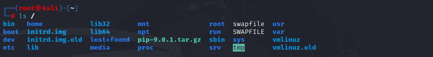

Linux系统目录

linux采用树形目录结构，“/”是根目录，以下是根目录下的主要目录
- /bin:存放基本用户命令，所有用户可执行。
- /boot:系统启动文件，如内核文件、引导配置等。
- /dev:设备文件，即硬件设备的抽象表示。
- /etc:配置文件，存放所有服务和系统配置。
- /home:普通用户的个人目录合集。
- /lib和/lib64:系统启动库，存放放共享库文件，类似于Windows中的”.dll”文件。
- /media和/mnt:挂载点，”media”是自动挂载可移动设备的位置，”mnt”是临时手动挂载的文件系统。
- /opt:第三方软件的安装位置，如”Google Chrome”,”Oracle”等。
- /proc:虚拟文件系统，提供系统运行时的动态信息。
- /root:超级管理员root用户的家目录。
- /run:存放运行时数据，重启后会清空。
- /sbin:存放系统管理命令，只有root用户可用。
- /srv:存放服务相关数据，如 Web 服务、FTP 服务数据。
- /sys：虚拟文件系统，提供硬件信息与内核接口。
- /tmp:临时文件，重启后清空。
- /user:存放系统软件和用户程序，类似于Windows的”Program Files”。
- /var:存放可变数据，如日志，缓存，队列等。
Linux命令
apt命令
apt 命令执行需要超级管理员权限(root),apt提供查找、安装、升级、删除软件包的命令
更新软件包列表
sudo apt update
列出可升级的软件包
apt list --upgradable
升级所有已安装的软件包
sudo apt upgrade
搜索软件包
apt search <keyword>
查看软件包信息
apt show <package-name>
安装软件包
sudo apt install <package-name>
卸载软件包（保留配置文件）
sudo apt remove <package-name>
彻底卸载（删除配置文件）
sudo apt purge <package-name>
清理下载的deb安装包
sudo apt autoremove # 删除不需要的依赖
sudo apt autoclean # 清理旧版本缓存
处理目录的常用命令
查看当前目录
pwd # print working directory
切换目录
1
2
3
4cd /path/to/dir # 切换到指定目录
cd ~ # 切换到用户家目录
cd .. # 切换到上级目录
cd - # 切换到上次访问的目录
列出目录内容
1
2
3
4
5ls # 列出当前目录
ls -l # 详细列表形式
ls -a # 显示所有文件（包括隐藏文件）
ls -lh # 人类可读的格式（显示文件大小）
ls -lt # 按修改时间排序
创建目录
1
2
3mkdir dirname # 创建单个目录
mkdir -p dir1/dir2 # 递归创建多级目录
mkdir -m 755 dirname # 创建并设置权限
删除目录
1
2
3rmdir emptydir # 只能删除空目录
rm -r dirname # 递归删除非空目录
rm -rf dirname # 强制删除（危险操作！）
复制目录
cp -r source/ target/ # 递归复制整个目录
移动/重命名目录
mv oldname newname # 重命名
mv dir1/ /path/dir2/ # 移动目录
编辑器vim
启动vim
vim filename # 打开或创建文件
vim +10 filename # 打开并定位到第10行
vim +/keyword filename # 打开并搜索关键词
磁盘管理的常用目录
查看磁盘使用情况
df -h # 查看磁盘分区使用情况
df -T # 显示文件系统类型
查看目录/文件大小
du -sh dirname # 查看目录总大小
du -sh * # 查看当前目录下所有文件/目录大小
du -h –max-depth=1 # 查看一级子目录大小
查看磁盘分区
fdisk -l # 查看所有磁盘分区（需要sudo）
lsblk # 以树形结构显示磁盘信息
blkid # 查看磁盘UUID和文件系统类型
挂载/卸载磁盘
mount /dev/sdb1 /mnt/usb # 挂载设备到目录
umount /mnt/usb # 卸载设备
mount # 查看已挂载的设备
磁盘分区工具
sudo fdisk /dev/sdb # 进入fdisk分区工具
sudo parted /dev/sdb # 进入parted分区工具（支持大磁盘）
查看磁盘IO情况
iostat # 需要安装sysstat
iotop # 实时查看进程磁盘IO
创建文件系统（格式化）
sudo mkfs.ext4 /dev/sdb1 # 格式化为ext4
sudo mkfs.xfs /dev/sdb1 # 格式化为xfs
sudo mkfs.ntfs /dev/sdb1 # 格式化为ntfs
用户管理的常用命令
查看用户信息
whoami # 当前登录用户名
id # 显示用户ID和组信息
users # 显示当前登录的所有用户
who # 显示登录用户详细信息
设置/修改密码
sudo passwd username # 修改指定用户密码
passwd # 修改当前用户密码
删除用户
sudo userdel username # 删除用户（保留家目录）
sudo userdel -r username # 删除用户并删除家目录
添加用户（需要sudo）
sudo useradd username # 创建用户（不创建家目录）
sudo adduser username # 交互式创建用户（推荐）
sudo useradd -m username # 创建用户并创建家目录
sudo useradd -s /bin/bash username # 指定登录shell
切换用户
su username # 切换用户（环境变量不变）
su - username # 切换用户（环境变量也切换）
sudo -i # 切换到root用户
用户组管理
sudo groupadd groupname # 创建用户组
sudo groupdel groupname # 删除用户组
sudo usermod -aG groupname username # 将用户添加到组
修改用户信息
sudo usermod -s /bin/zsh username # 修改默认shell
sudo usermod -L username # 锁定用户
sudo usermod -U username # 解锁用户